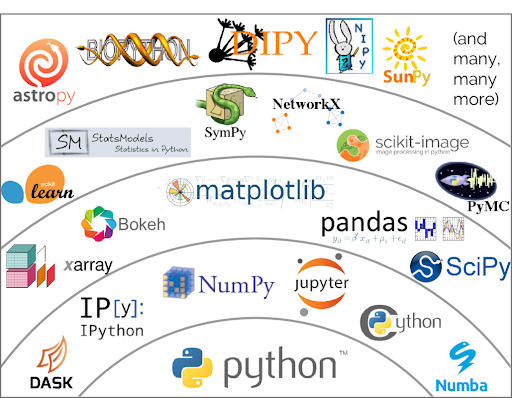
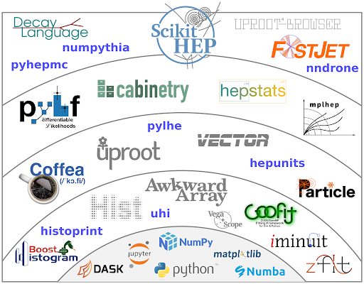

Functions, Libraries and Modules#
Functions in Python#
Often one needs to run the same piece of code many times, but with input
variables set to different values. This can be done using a “function”, which
is given a name and uses the def and return keywords:
def f(x):
return x**2 + 1
The function can then be “called” with different values of the input value x:
y = f(2)
print(y)
z = f(3)
z = print(z)
5
10
The body of the function can be as complex as needed:
def number_guess(i):
if i == 9:
print("You guessed the number!")
return True
elif i < 9:
print(f'{i} is too low')
return False
else:
print(f'{i} is too high')
return False
i=0
while not number_guess(i):
i += 1
0 is too low
1 is too low
2 is too low
3 is too low
4 is too low
5 is too low
6 is too low
7 is too low
8 is too low
You guessed the number!
The Python Standard Library#
In addition to user defined functions as above, groups of related functions are available for import into a program as “libraries” or modules” (for now we ignore the distinction).
The “Python standard library” is one example which provides a variety of general
use functionalities. If you have installed any recent version of Python you
should have these available without needing to do any additional software
installations. You will however need to make them visible with any given program
via the use of the import command, e.g. to import the math library
import math
This will make all functions from that standard library module visible in your program. For larger modules which provide multiple functionalities, one sometimes imports only some specific functionalities:
from datetime import datetime, timedelta
Some widely used built-in modules of the standard library include:
math - provides basic math functions (but see also Numpy)
datetime - provides tools for manipulating dates and times
random - tools for generating pseudo-random numbers (see our separate, dedicated section in this review for info about using both the built-in random module and similar functionality in Numpy)
pathlib - object-oriented tools for managing file paths
re - provides tools for using regular expressions for pattern matching strings in Python
pprint - provides functionality to pretty-print complicated data types (e.g. lists, dictionaries) in a more readable fashion
We give some examples with these below, however there are many more. See the full Python Standard Library documentation for the full list of built-in modules and more detail on each.
Examples from the Python Standard Library#
import math
angle = math.radians(45)
print(math.sin(angle))
0.7071067811865475
from datetime import datetime, timedelta
now = datetime.now()
print(now.strftime("%Y-%m-%d"))
tomorrow = now + timedelta(days=1)
print(tomorrow.strftime("%Y-%m-%d"))
2025-06-16
2025-06-17
import re
text = "My phone number is 123-456-7890"
match = re.search(r"\d{3}-\d{3}-\d{4}", text)
print(match.group()) # Output: 123-456-7890
123-456-7890
from pprint import pprint
data = {'name': 'Alice', 'scores': [98, 85, 91], 'details': {'age': 30, 'city': 'Paris'}}
print('\nThe standard printout is:\n')
print(data)
print('\nThe pretty-print version is:\n')
pprint(data)
The standard printout is:
{'name': 'Alice', 'scores': [98, 85, 91], 'details': {'age': 30, 'city': 'Paris'}}
The pretty-print version is:
{'details': {'age': 30, 'city': 'Paris'},
'name': 'Alice',
'scores': [98, 85, 91]}
The Larger Scientific and Data Science Python Ecosystem#

The Python language itself was designed to be flexible and easy to use, read and write. But what makes it really powerful is the very large ecosystem of add-on packages spanning many scientific domain as well as the data science and machine learning worlds. There are way too many to cover in this short review, but we cover three of the most important ones:
numpy - a performance-oriented math library for large multi-dimensional arrays, see our quick review of Numpy
matplotlib - a library for a making, customizing and styling plots from data, see our quick review of matplotlib
pandas - a library for manipulating and analyzing data in “tabular” format with rows and columns, see our quick review of Pandas
but once you master the material in these lessons (and certainly by the time you have achieved “100 hours” of actual code writing) you will naturally find yourself leveraging
The Python Ecosystem in HEP - Scikit-HEP#
